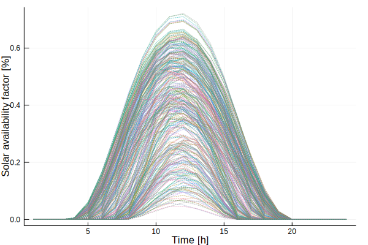

Load Data
Load Timeseries Data
load_timeseries_data() loads the data for a given application and region. Possible applications are
DAM: Day ahead market price data
Possible regions are:
GER: GermanyCA: California
The optional input parameters to load_timeseries_data() are the number of periods K and the number of time steps per period T. By default, they are chosen such that they result in daily time slices.
ClustForOpt.load_timeseries_data — Function.load_timeseriesdata(data_path::String; T-#Segments,years::Array{Int64,1}=# years to be selected for the time series, att::Array{String,1}=# attributes to be loaded)- Loading all
*.csvfiles in the folder or the filedata_path - The
*.csvfiles shall have the following structure and must have the same length:
| Timestamp | Year | [column names...] |
|---|---|---|
| [iterator] | [year] | [values] |
- The first column should be called
Timestampif it contains a time iterator - The second column should be called
Yearand contains the corresponding year - The other columns can specify the single timeseries like specific geolocation.
- Each column in
[file name].csvfile will be added to the ClustData.data called"[file name]-[column name]" - Loads all attributes if the
att-Array is empty or only the ones specified in it
Example loading timeseries data
using ClustForOpt
# laod ts-input-data
ts_input_data = load_timeseries_data(normpath(joinpath(@__DIR__,"..","..","data","TS_GER_1")); T=24, years=[2016])
using Plots
plot(ts_input_data.data["solar-germany"], legend=false, linestyle=:dot, xlabel="Time [h]", ylabel="Solar availability factor [%]")
savefig("load_timeseries_data.svg")/home/travis/.julia/packages/GR/KGODl/src/../deps/gr/bin/gksqt: error while loading shared libraries: libQt5Widgets.so.5: cannot open shared object file: No such file or directory
connect: Connection refused
GKS: can't connect to GKS socket application
Did you start 'gksqt'?
GKS: Open failed in routine OPEN_WS
GKS: GKS not in proper state. GKS must be either in the state WSOP or WSAC in routine ACTIVATE_WS